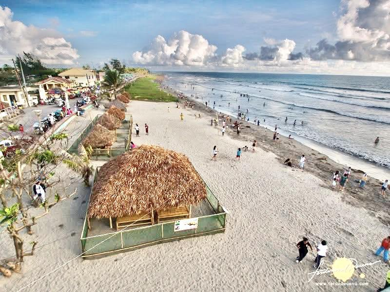
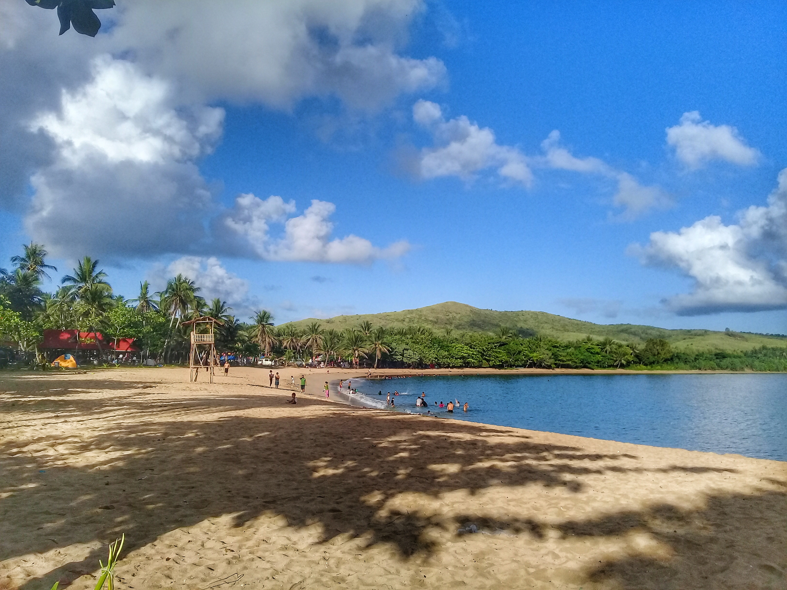
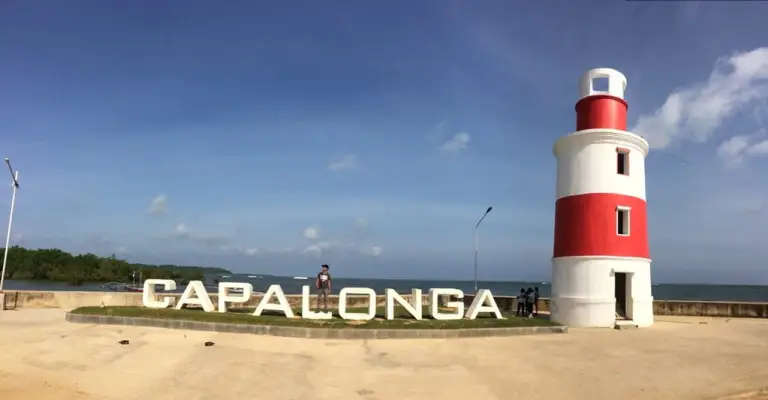
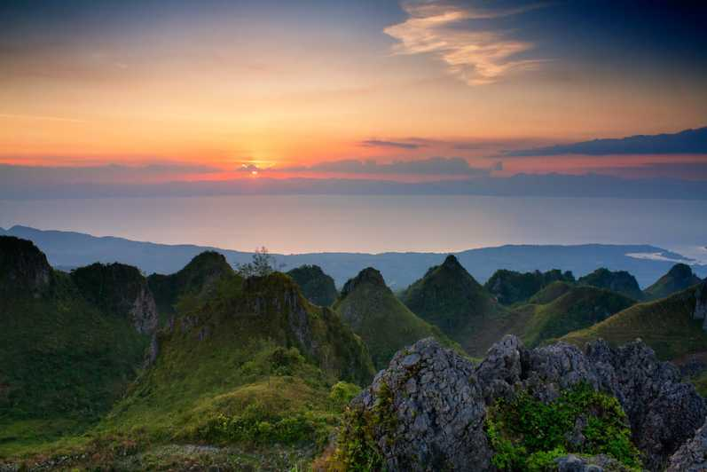
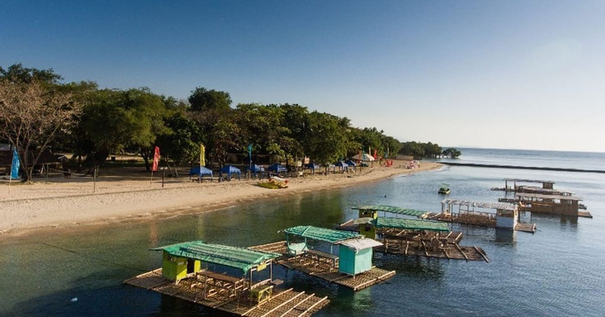

Tourist Destinations

Bagasbas Beach
A long stretch of black sand beach in Daet, popular for surfing and beach activities. It is one of the most visited beaches in the province.
Read More →
Calaguas Island
A remote island group with white powdery sand and clear blue waters. Often called one of the most beautiful islands in the Philippines.
Read More →
Paracale
Known as the Gold Capital of the Philippines, Paracale has a rich mining history and local gold jewelry crafts.
Read More →
Capalonga
A municipality known for its natural scenery, rivers, and ecotourism spots including mangrove areas and waterfalls.
Read More →
Osmeña Peak (Daet)
A high point in Daet offering a view of the surrounding landscape, the sea, and nearby towns. A good spot for trekking.
Read More →
Matabungkay Area
A coastal area with calm waters and small resorts, ideal for family trips and relaxation.
Read More →Travel Tips
- Best time to visit is between November and April (dry season)
- Bring cash as some areas have limited ATM access
- Hire local guides for island hopping trips
- Respect local communities and the environment